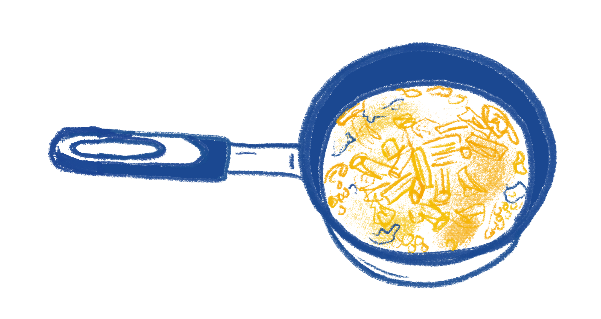
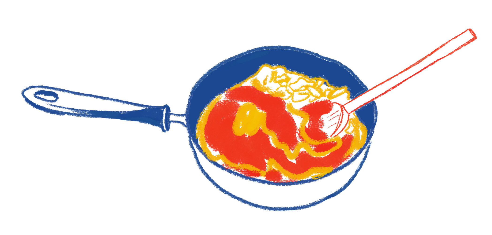
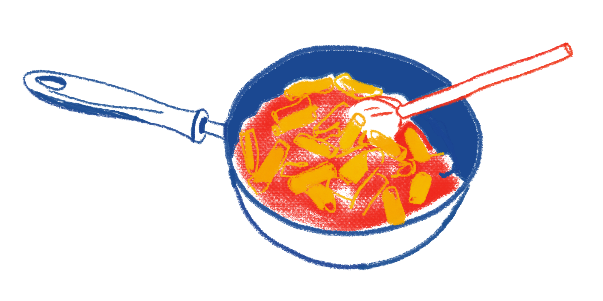
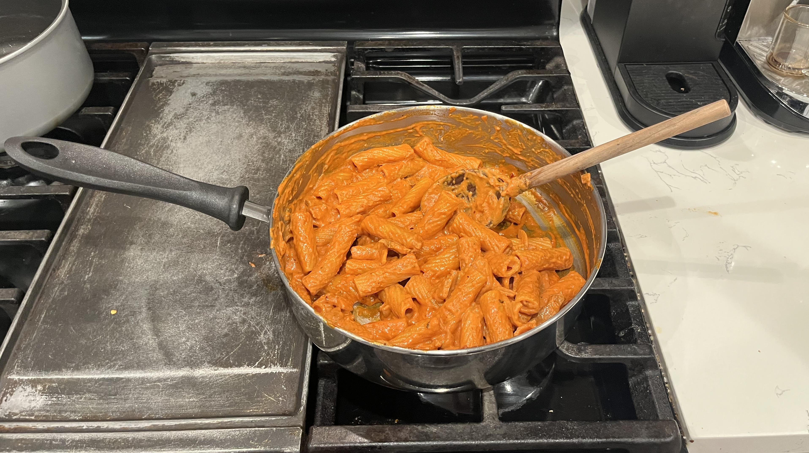

Vodka Pasta
Penne alla Vodka, also known as Vodka Pasta is a creamy tomato based pasta that is yummy and easy to make. It takes less than an hour and makes for a quick lunch or dinner.
Prep: 10 mins
Cook: 25 mins
Total: 35 mins
Serves 2-3
Tips!
- If your pasta isn’t ready when sauce is done being made, turn off heat for the sauce.
- Use a big pot or pan (when starting) for the sauce so you can stir in the pasta.
- Pasta water is important! The starch in pasta water emulsifies with the sauce’s fat, naturally thickening it and making it stick to the pasta.
- You can use low fat cream, it just won’t have the creamy pasta feel.
- Best Pasta to use: Rigatoni or Penne
- Customize it to your liking and add in shrimp, chicken, or whatever you like instead of Pork Belly (what I’m using)
Ingredients!
- Pasta
- Olive oil
- Minced Garlic
- Minced Onion
- 2/3 Cup of Tomato Paste
- Choice of Protein (if wanted)
- 2 Tbsp Hot Pepper Paste/Korean Gochujang
- 1 1/2 Cup of Heavy Cream
- Dried Basil Seasoning
- Red Pepper Flakes
- Italian Seasoning
- Black Pepper
- Salt to taste
- 1 Cup Parmesan
- 2 Tbsp Unsalted Butter
- 1/4 Cup of Pasta Water
Recipe!

1.
Boil your pasta in a large pot of salted water
*SAVE a 1/4 cup of pasta water before draining
2.
In a LARGE pan, put olive oil and sauté the garlic, onion and protein of choice (if you want)
*I'm using pork belly
3.
In the same pan, cook off tomato paste and mix in hot pepper paste
*I’m using Korean gochujang

4.
Mix in the heavy cream
5.
Mix in seasonings and parmesan: basil, pepper flakes, italian seasoning, black pepper, and salt
*Taste as you go


6.
Add your pasta
7.
Mix in butter and pasta water
*Keep an eye on consistency